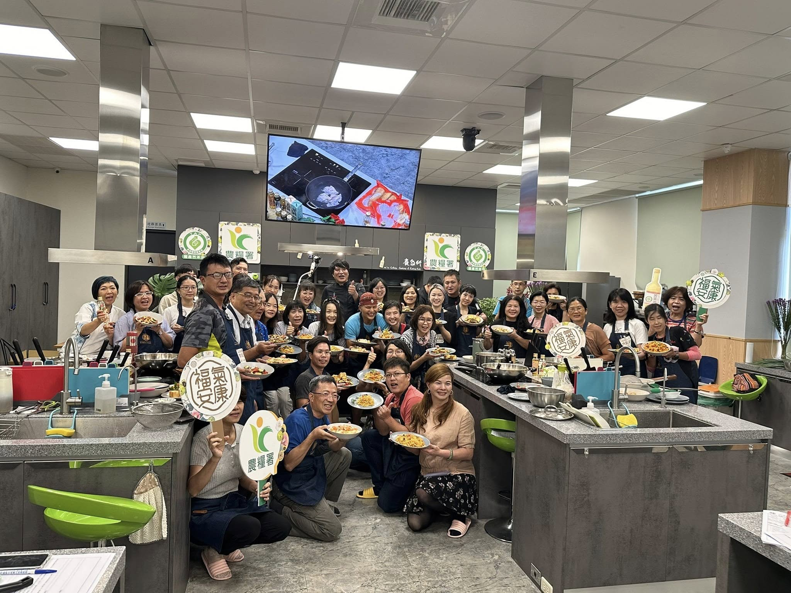

近年台北到府私廚市場快速成長，從個人接案主廚到專業團隊都有，服務品質與規格落差非常大。對第一次預約的消費者來說，最容易遇到的困擾是「不知道怎麼判斷這位主廚或團隊值不值得信任」。這篇指南整理幾個實用的評估角度，幫助您在預約前做出更有把握的判斷。
資歷年限只是參考指標之一，更重要的是「實際服務過的場合類型」是否符合您的需求。如果您要辦的是董事長宴請或企業 VIP 接待，就要確認主廚是否有相關實績，而不只是家庭聚餐的經驗。舒苑主廚林東立擁有 20 年以上餐飲資歷，累積 600+ 場高端餐宴實績，涵蓋企業接待、豪宅家宴到品牌發表會等多元場合。
建議在預約前，要求查看過往服務的實際照片或案例紀錄，而不是僅憑菜單文字描述。實際擺盤呈現、現場佈置風格，是判斷這位主廚美學調性是否符合您期待的關鍵。可參考 服務實例 頁面查看過往案例。
從報價構成、預約流程、菜單客製化彈性，到餐後清潔範圍，這些細節是否能被清楚說明，反映了團隊的專業度。建議在諮詢階段，直接詢問「報價包含哪些項目」、「臨時異動菜色是否可行」，透明的團隊通常會給出具體且一致的答案。
大型或重要場合（如企業活動、VIP 接待），單一主廚很難同時兼顧料理與現場服務。建議確認團隊是否有完整的助理與服務人員配置，尤其是超過 10 人的場次，人力調度能力直接影響出餐節奏與服務品質。
從第一次諮詢的應對方式，往往就能看出團隊的服務態度。專業的私廚團隊會主動詢問場合性質、賓客飲食禁忌與預算範圍，而不是直接丟一份固定菜單了事。
Step 1：確認基本需求。包含日期、人數、場地與初步預算範圍，建議提前 7-14 天預約，熱門節慶或指定主廚建議提前 1 個月以上。
Step 2：菜單溝通與客製化。提出飲食禁忌、偏好食材與場合性質，讓主廚設計專屬菜單建議。
Step 3：確認報價與細節。包含食材、人力、設備與清潔範圍，避免臨時追加費用的認知落差。
Step 4：活動執行與餐後清潔。專業團隊會於約定時間進場準備，服務完成後包含廚房復原與餐具清洗，讓您完全不需要動手收拾。
舒苑由金帽獎主廚林東立領軍，主要服務台北、新北、桃園、新竹、台中等地區到府私廚、企業外燴與 VIP 餐宴，並提供完全客製化的菜單設計與一條龍服務。無論是私人家宴、董事長宴請，還是企業品牌活動，我們都能依照您的場合性質提供最合適的方案。歡迎參考 常見問題 頁面了解更多預約細節，或直接與我們聯繫討論您的專屬餐宴計畫。
讓我們協助您找到最適合的私人主廚團隊。